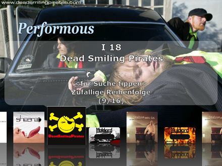
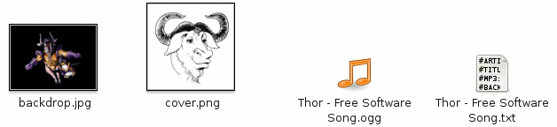
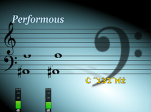
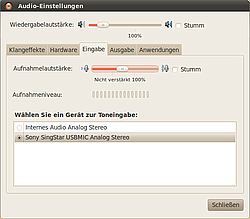

Performous
Dieser Artikel wurde für die folgenden Ubuntu-Versionen getestet:
Ubuntu 16.04 Xenial Xerus
Zum Verständnis dieses Artikels sind folgende Seiten hilfreich:
Performous  (vorher: UltraStar Next Generation) ist ein Clone des bekannten Karaoke-Spiels SingStar von der PlayStation. Für das Spiel werden - aufgrund von Lizenzen - keine Lieder mitgeliefert. Um ein Stück mit dem Programm zu singen benötigt man eine Musikdatei, welche in den Formaten ogg, mp3, o.ä. vorliegen sollte, passend dazu eine Textdatei, in der sich der Text sowie die Tonhöhe befinden. Optional können Cover, Hintergrundbilder und Videos genutzt werden, die dann zum Lied eingeblendet werden.
(vorher: UltraStar Next Generation) ist ein Clone des bekannten Karaoke-Spiels SingStar von der PlayStation. Für das Spiel werden - aufgrund von Lizenzen - keine Lieder mitgeliefert. Um ein Stück mit dem Programm zu singen benötigt man eine Musikdatei, welche in den Formaten ogg, mp3, o.ä. vorliegen sollte, passend dazu eine Textdatei, in der sich der Text sowie die Tonhöhe befinden. Optional können Cover, Hintergrundbilder und Videos genutzt werden, die dann zum Lied eingeblendet werden.
Aktuelle Programmversionen unterstützen neben Karaoke auch Gitarrencontroller, Bass und Schlagzeug der Konsolen-Spiele Rock Band , Webcams sowie Tanzmatten von Tanzspielen.
|  |
| Performous |
Installation¶
Es empfiehlt sich immer die aktuelle Version des Programms zu installieren, da diese mögliche Fehler behebt oder neue Features mitbringt.
Performous kann direkt aus den Paketquellen über das Paket
performous (universe)
performous-tools (SingStar DVDs konvertieren)
fretsonfire-songs-muldjord (universe, Songs)
fretsonfire-songs-sectoid (universe, Songs)
 mit apturl
mit apturl
Paketliste zum Kopieren:
sudo apt-get install performous performous-tools fretsonfire-songs-muldjord fretsonfire-songs-sectoid
sudo aptitude install performous performous-tools fretsonfire-songs-muldjord fretsonfire-songs-sectoid
installiert werden [1].
Danach kann man das Spiel über "Anwendungen -> Spiele -> Performous" starten.
Lieder¶
Um Performous um neue Lieder zu erweitern, muss man die passende .txt-Datei aus dem Internet herunterladen. Diese ist schnell über Suchmaschinen ausfindig zu machen. Die zugehörige Audiodatei entweder im Online-Store kaufen oder von der eigenen CD einlesen. Cover und Hintergrundbilder ebenfalls im Netz suchen. Das Cover kann eine Größe von 400 x 400 Pixel haben und das Hintergrundbild sollte nicht breiter als 1.024 Pixel sein. Alternativ Musikvideo im MPEG-Format einbinden. Diese können von diversen Portalen heruntergeladen und konvertiert werden. Seit Version 0.32 stehen beim Benutzer auch Skripte zur Verfügung um eigene SingStar-Spiele nutzen zu können.
Auf der Projektseite  findet man eine Auswahl von freien und unfreien Liedern. Diese entpacken [4] und nach ~/.ultrastar/songs kopieren. Beim nächsten Programmstart stehen die Lieder zur Auswahl. Sollte der Ordner noch nicht vorhanden sein, muss er manuell erstellt werden.
findet man eine Auswahl von freien und unfreien Liedern. Diese entpacken [4] und nach ~/.ultrastar/songs kopieren. Beim nächsten Programmstart stehen die Lieder zur Auswahl. Sollte der Ordner noch nicht vorhanden sein, muss er manuell erstellt werden.
Konfiguration¶
Lieder¶
Um Lieder in das Programm zu importieren muss man den Text und die passende Audiodatei nach ~/.ultrastar/songs/Interpret-Titel kopieren. Falls der Ordner nicht existiert - diesen manuell erstellen. In den Ordner Interpret - Titel können das Cover und ein Hintergrundbild hinzugefügt werden.
Der Ordnerinhalt kann wie folgt aussehen:

Es ist zu beachten, dass folgende Grundregeln zu beachten sind, damit das Programm die Dateien erkennt:
| Performous | |
| Bereich | Beschreibung |
| Cover | Dateinamen cover, album oder label mit der Endung .png, .jpeg, .jpg oder .svg. |
| Hintergrundbild | Die Namen backdrop, bg oder background mit den Endungen .png, .jpeg, .jpg oder .svg. |
| Videos | Hier darf jeder Titel verwendet werden. Unterstützt werden die Formate .avi, .mpg, .mpeg, .flv, .mov und .mp4. |
Damit die hinterlegten Daten von UltraStar / Performous angenommen werden die Textdatei, welche man sich im Vorfeld mit dem Composer oder Yass erstellt bzw. heruntergeladen hat, mit einem Editor [3] bearbeiten. Hier die Dateinamen der hinterlegten Daten anpassen. Als Minimum müssen folgende Zeilen enthalten sein:
#TITLE: #ARTIST: #MP3: #BPM: #GAP:
Die Bedeutung der einzelnen Punkte:
| Dateistruktur | |
| Punkt | Beschreibung |
#ARTIST:Interpet | Der Interpret des Liedes. |
#TITLE:Songname | Titel des Liedes. Dieser wird bei der Auswahl des Liedes angezeigt. |
#MP3:Song.Endung | Name der Audio-Datei - mögliche Formate: mp3 / ogg |
#COVER:Dateiname.Endung | Hinterlegtes Cover: jpg / png |
#BACKGROUND:Dateiname.Endung | Statisches Hintergrundbild, wenn kein Video verwendet wird. |
#VIDEO:Dateinam.Endung | Name der Video-Datei, welche anstatt des statischen Hintergrundbildes verwendet wird - mögliche Formate: m4v, mpg, avi, flv... |
#GENRE:foo | Genre des Songs |
#EDITION:uus | Name der Sammlung - hier: uus |
#LANGUAGE:english | Sprache des Songs |
#ALBUM:foobar | Name des Albums. |
#YEAR:1900 | Jahr in dem der Song veröffentlicht wurde. |
#BPM:75,15 | Geschwindigkeit des Liedes |
#GAP:14200 | Der Abstand des Textes vom Anfang des Liedes in Millisekunden. |
Es gibt noch weitere Parameter (z.B. #CREATOR, #LENGTH, #END, #VIDEOGAP und #PREVIEWSTART), welche verwendet werden können.
Controller¶
Die ab Version 0.40 unterstützten Controller der Spielereihen Guitar_Hero und Rock_Band werden vom Spiel erkannt. Standardmäßig wird die Tastatur als Gitarren-Controller verwendet. Dies ändert man unter "Config -> Keyboard as Guitar" und ändert hier den Wert auf "Disabled".
Im Wiki von Performous findet man eine Liste unterstützter Controller und Adapter für Tanzmatten, Gitarren und Schlagzeuge. Mittels Wiimote können die Gitarrencontroller von Nintendo verwendet werden.
|  |
| Practice |
Bedienung¶
Das Menü des Programms ist überschaubar. Mit S "Start" beginnt man das Spiel. Im nächsten Fenster wählt man mit den Pfeiltasten ← + → den gewünschten Song aus und startet diesen mit ⏎ Enter. Seit Version 0.40 werden Gitarrencontroller, Bass und Schlagzeug der Konsolen-Spiele Rock Band und Guitar Hero untersützt. Je nachdem welche Option das ausgewählte Stück bietet wird das entsprechende Symbol eingeblendet.
P "Practice" erlaubt es die Tonleiter zu üben. Gleichzeitig kann hier ersehen werden ob die Mikrofone funktionieren. Unter C "Configure" können bei beiden Programmen Einstellungen an der Lautstärke vorgenommen werden. Die ältere Version bietet hier ebenfalls die Möglichkeit zwischen Fenster- und Vollbildmodus zu wechseln. Jeder Menüpunkt kann mit Esc Escape wieder verlassen werden. Weitere Tastenkürzel stehen zur Verfügung.
Suche¶
Um einen Titel in der Musiksammlung zu suchen kann man den entsprechenden T + I + T + E + L im Abspielfenster eingeben. Alternativ kann man die Sortierung nach Genre, Künstler et cetera vornehmen. Um die Sortierung zu ändern mit ↑ ↓ die gewünschte Auswahl treffen.
|  |
| Mikrophone |
Tipps¶
Mikrophone¶
Sollten im Spiel die Mikrophone nicht erkannt werden sollten die Einstellungen der Lautstärkeregler überprüft werden.
Hintergrundbilder¶
Sofern einige Lieder keine Videos oder Hintergrundbilder mitbringen kann man eigene Bilder verwenden. Diese im Ordner ~/.local/share/games/performous/backgrounds/ abspeichern und Performous wählt eines per Zufall aus.
Spielerkonfiguration¶
Um einen eigenen Avatar hinzuzufügen ein Bild im Format png, jpg oder svg im Ordner ~/.local/share/games/performous/pictures/ ablegen. Anschließend im Ordner ~/.config/performous/ die Datei database.xml bearbeiten [3]. In diesem Beispiel wird Spieler 1 angepaßt:
<player name="MEINNICK" id="1"/>
ändern zu
<player name="MEINNICK" id="1">
<picture>MEINAVATAR.png</picture>
</player>Umlaute in Songtexten¶
Übernimmt man Songs aus Systemen, die mit Windows laufen, so werden die Umlaute in den Songs nicht korrekt dargestellt. Dies liegt an unterschiedlichen Codierungen der Dateien. Die Codierung lässt sich sehr leicht mit dem Programm recode anpassen. Es ist üblicherweise nicht installiert, lässt sich jedoch über das Paket
recode
mit apturl
Paketliste zum Kopieren:
sudo apt-get install recode
sudo aptitude install recode
problemlos nachinstallieren [1]. Danach kann man mit dem Befehl [2]
recode CP1252..UTF-8 songtext_beispiel.txt
eine Textdatei anpassen, oder mit dem Befehl
find ~/.ultrastar/songs -type f -name "*.txt" -exec recode CP1252..UTF-8 "{}" \; alle Textdateien für das Spiel auf einmal korrigieren.
Songliste ausgeben¶
Je nach Umfang der Musiksammlung macht es Sinn die vorhandenen Songs in einer Liste auszugeben um diese auszudrucken. Dies erreicht man [2] durch
performous --songlist foo #foo ist Platzhalter für das Verzeichnis
Die so erzeugte xml-Datei kann mit dem gewünschten Programm in andere Formate umgewandelt werden.
SingStar¶
Zum auslesen der eigenen Spiele-DVDs stehen seit Version 0.32 diverse Werkzeuge zur Verfügung. Dies wären ss_adpcm_decode, ss_cover_conv, ss_extract, ss_ipu_conv, ss_archive_extract, ss_chc_decode, ss_ipu_decode und ss_pak_extract.
ss_extract¶
Singstar DVDs benutzen das UDF und ISO 9660 Dateisystem. Unter Ubuntu werden die DVDs automatisch mit UDF eingebunden. Um die DVDs auslesen zu können müssen diese jedoch im Format ISO-9660 eingebunden werden. Hierfür sind Root-Rechte und ein Verzeichnis wo die DVD eingebunden werden soll erforderlich. Letzteres muss ggf. neu erstellt werden. Nachdem dies geschehen ist kann das Programm mittels des folgenden Befehls aufgerufen werden [2]:
ss_extract /media/cdrom0
Es können weitere Parameter übergeben werden um die Kompatibilität mit anderen Programmen zu erhöhen.
Den Pfad ggf. noch anpassen. Danach holt das Skript die benötigten Daten und bereitet diese auf:
XY songs found [ID] Künstler - Titel >>> Extracting and decoding music >>> Extracting cover image >>> Extracting video >>> Converting video 640x336 ...
Die Musikdateien werden im .WAV-Format abgelegt. Möchte man Platz sparen, so können diese auch in OGG extrahiert werden. Dazu ist es nötig das Paket
vorbis-tools (universe, seit Jaunty)
mit apturl
Paketliste zum Kopieren:
sudo apt-get install vorbis-tools
sudo aptitude install vorbis-tools
zu installieren. Einzelne Tracks können ebenfalls ausgelesen werden. Im Verzeichnis aus dem das Skript gestartet wurde werden Ordner der Künstler angelegt, welche die benötigten Dateien enthalten.
Hinweis:
Singstar-Spieletitel ab dem Jahr 2009+ (für die PS2) können erst mit neueren Programmversionen ausgelesen werden. Spieletitel für die PS3 werden nicht unterstützt.
Tastenkürzel¶
| Ultrastar / Performous | |
| Taste(n) | Funktion |
| Generell | |
| Esc | Eine Ebene höher wechseln. |
| Alt + ⏎ | Vollbild / Fenstermodus |
| / Strg + R | PulseAudio |
| ⏎ | Menüpunkt anwählen. |
| Alt + F4 | Programm beenden. |
| Strg + A | Hintergrund durch das Bild der Webcam austauschen. |
| Hauptmenü | |
| S | Spielstart |
| P | Anzeige der gesungenen Tonhöhen und Aussteuerungsmesser der Mikrofone. |
| C | Spieleinstellungen |
| Konfiguration | |
| ↑ ↓ | Navigation |
| ← → | Vorgaben anpassen. |
| Strg + R | Spieleinstellungen zurücksetzen. |
| Strg + S | Spieleinstellungen speichern. |
| Liederauswahl | |
| ← → | Navigation |
| ⏎ | Gewähltes Stück spielen. |
| A + B + C | Songsuche - Feld löschen mit Esc |
| ↑ ↓ | Sortierung ändern. |
| Bild ↑ + Bild ↓ | 10 Songs überspringen. |
| Strg + R | Lieder erneut einlesen lassen. |
| F4 | Jukebox-Modus. |
| ↑ + ↓ | Suche in 5 s. Schritten. |
| Bild ↑ + Bild ↓ | Suche in 30 s. Schritten. |
| Spielbildschirm | |
| ⏎ | Instumentales überspringen. |
| F4 | Synthesizer-Modus. |
| F5 + F6 | Einstellungen Audio/Video. |
| F7 + F8 | Feineinstellung Audio |
| F9 | Karaoke-Modus. |
| F10 | Aufführungsmodus. |
| Strg + R | Lied neu starten. |
| ← + → | Suche in 5 s. Schritten. |
| ↑ + ↓ | Suche in 30 s. Schritten. |
| Pause | |
| Controller | |
| F1 + F2 + F3 + F4 | gespielter Bund / Schwierigkeitsgrad |
| F5 | Wahl des Instruments |
| ⇧ | Strum Bar |
| ⏎ | Tremolo |
| 1 + 2 + 3 + 4 | gespielter Bund |
| 5 | Wahl des Instruments |

Links¶
Lieder¶
Wise Guys - Mensch, wo bist du ? (2009)
- 32. Deutscher Evangelischer Kirchentag 
Wise Guys - Lebendig und kräftig und schärfer (2007)
- 31. Deutscher Evangelischer Kirchentag Ultrastar Deluxe Rocks!
- MP3 und USDX Zip Päckchen der Berliner Rockband Shearer
- Erstellt mit Inyoka
-
 2004 – 2017 ubuntuusers.de • Einige Rechte vorbehalten
2004 – 2017 ubuntuusers.de • Einige Rechte vorbehalten
Lizenz • Kontakt • Datenschutz • Impressum • Serverstatus -
Serverhousing gespendet von